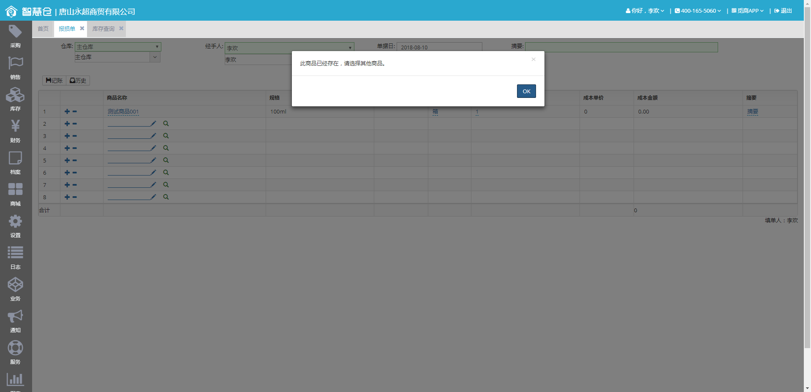
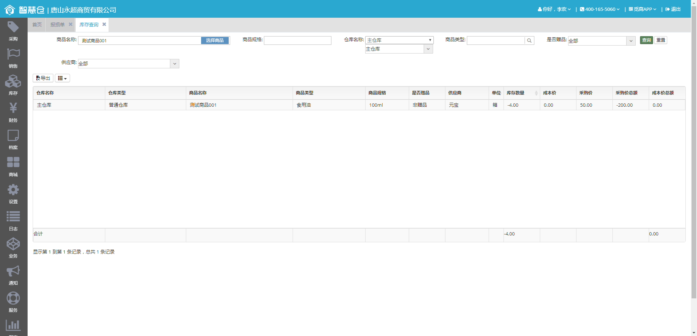
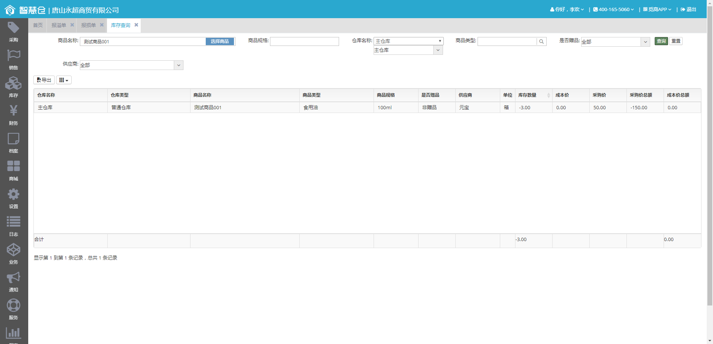

| Tests passed/Failed/Skipped: | 0/2/2 |
| Started on: | Fri Aug 10 14:17:54 CST 2018 |
| Total time: | 113 seconds (113661 ms) |
| Included groups: | 生成报溢单 生成报损单 |
| Excluded groups: |
| FAILED TESTS | |||
| Test method | Exception | Time (seconds) | Instance |
| toLose Test class: com.hebg3.testcases.login.LoginPage_001_LoginSuccessFunction_Test Show output Show all outputs
result/screenshot/2018_08_10_14_18_54_toLose.jpg
 |
java.lang.AssertionError: Failed to click element [By.xpath: //*[@id='loseOverflowTable']/tbody/tr[1]/td[1]]
at com.hebg3.utils.SeleniumUtil.click(SeleniumUtil.java:409)
at com.hebg3.pageshelper.sale.ToLossBillHelper.addProductByText(ToLossBillHelper.java:242)
at com.hebg3.pageshelper.sale.ToLossBillHelper.typeOrderQuickly(ToLossBillHelper.java:302)
at com.hebg3.testcases.login.LoginPage_001_LoginSuccessFunction_Test.toLose(LoginPage_001_LoginSuccessFunction_Test.java:124)
Caused by: java.lang.Exception: org.openqa.selenium.WebDriverException: unknown error: Element <td style="width: 40px; ">...</td> is not clickable at point (40, 173). Other element would receive the click: <div class="bootbox modal fade bootbox-alert in" tabindex="-1" role="dialog" style="display: block;">...</div>
(Session info: chrome=67.0.3396.99)
(Driver info: chromedriver=2.36.540470 (e522d04694c7ebea4ba8821272dbef4f9b818c91),platform=Windows NT 6.1.7601 SP1 x86_64) (WARNING: The server did not provide any stacktrace information)
Command duration or timeout: 0 milliseconds
Build info: version: '3.11.0', revision: 'e59cfb3', time: '2018-03-11T20:33:08.638Z'
System info: host: 'ADMIN-PC', ip: '192.168.2.65', os.name: 'Windows 7', os.arch: 'amd64', os.version: '6.1', java.version: '1.8.0_172'
Driver info: org.openqa.selenium.chrome.ChromeDriver
Capabilities {acceptInsecureCerts: false, acceptSslCerts: false, applicationCacheEnabled: false, browserConnectionEnabled: false, browserName: chrome, chrome: {chromedriverVersion: 2.36.540470 (e522d04694c7eb..., userDataDir: C:\Users\admin\AppData\Loca...}, cssSelectorsEnabled: true, databaseEnabled: false, handlesAlerts: true, hasTouchScreen: false, javascriptEnabled: true, locationContextEnabled: true, mobileEmulationEnabled: false, nativeEvents: true, networkConnectionEnabled: false, pageLoadStrategy: normal, platform: XP, platformName: XP, rotatable: false, setWindowRect: true, takesHeapSnapshot: true, takesScreenshot: true, unexpectedAlertBehaviour: , unhandledPromptBehavior: , version: 67.0.3396.99, webStorageEnabled: true}
Session ID: ce147d572a89848424e43f8279db1e6b
at com.hebg3.utils.SeleniumUtil.clickTheClickable(SeleniumUtil.java:634)
at com.hebg3.utils.SeleniumUtil.clickTheClickable(SeleniumUtil.java:638)
at com.hebg3.utils.SeleniumUtil.clickTheClickable(SeleniumUtil.java:638)
at com.hebg3.utils.SeleniumUtil.clickTheClickable(SeleniumUtil.java:638)
at com.hebg3.utils.SeleniumUtil.clickTheClickable(SeleniumUtil.java:638)
at com.hebg3.utils.SeleniumUtil.click(SeleniumUtil.java:403)
... 28 more
Caused by: org.openqa.selenium.WebDriverException: unknown error: Element <td style="width: 40px; ">...</td> is not clickable at point (40, 173). Other element would receive the click: <div class="bootbox modal fade bootbox-alert in" tabindex="-1" role="dialog" style="display: block;">...</div>
(Session info: chrome=67.0.3396.99)
(Driver info: chromedriver=2.36.540470 (e522d04694c7ebea4ba8821272dbef4f9b818c91),platform=Windows NT 6.1.7601 SP1 x86_64) (WARNING: The server did not provide any stacktrace information)
Command duration or timeout: 0 milliseconds
Build info: version: '3.11.0', revision: 'e59cfb3', time: '2018-03-11T20:33:08.638Z'
System info: host: 'ADMIN-PC', ip: '192.168.2.65', os.name: 'Windows 7', os.arch: 'amd64', os.version: '6.1', java.version: '1.8.0_172'
Driver info: org.openqa.selenium.chrome.ChromeDriver
Capabilities {acceptInsecureCerts: false, acceptSslCerts: false, applicationCacheEnabled: false, browserConnectionEnabled: false, browserName: chrome, chrome: {chromedriverVersion: 2.36.540470 (e522d04694c7eb..., userDataDir: C:\Users\admin\AppData\Loca...}, cssSelectorsEnabled: true, databaseEnabled: false, handlesAlerts: true, hasTouchScreen: false, javascriptEnabled: true, locationContextEnabled: true, mobileEmulationEnabled: false, nativeEvents: true, networkConnectionEnabled: false, pageLoadStrategy: normal, platform: XP, platformName: XP, rotatable: false, setWindowRect: true, takesHeapSnapshot: true, takesScreenshot: true, unexpectedAlertBehaviour: , unhandledPromptBehavior: , version: 67.0.3396.99, webStorageEnabled: true}
Session ID: ce147d572a89848424e43f8279db1e6b
at org.openqa.selenium.remote.ErrorHandler.createThrowable(ErrorHandler.java:214)
at org.openqa.selenium.remote.ErrorHandler.throwIfResponseFailed(ErrorHandler.java:166)
at org.openqa.selenium.remote.http.JsonHttpResponseCodec.reconstructValue(JsonHttpResponseCodec.java:40)
at org.openqa.selenium.remote.http.AbstractHttpResponseCodec.decode(AbstractHttpResponseCodec.java:80)
at org.openqa.selenium.remote.http.AbstractHttpResponseCodec.decode(AbstractHttpResponseCodec.java:44)
at org.openqa.selenium.remote.HttpCommandExecutor.execute(HttpCommandExecutor.java:158)
at org.openqa.selenium.remote.service.DriverCommandExecutor.execute(DriverCommandExecutor.java:83)
at org.openqa.selenium.remote.RemoteWebDriver.execute(RemoteWebDriver.java:545)
at org.openqa.selenium.remote.RemoteWebElement.execute(RemoteWebElement.java:279)
at org.openqa.selenium.remote.RemoteWebElement.click(RemoteWebElement.java:83)
at com.hebg3.utils.SeleniumUtil.clickTheClickable(SeleniumUtil.java:630)
... 33 more
... Removed 30 stack framesjava.lang.AssertionError: Failed to click element [By.xpath: //*[@id='loseOverflowTable']/tbody/tr[1]/td[1]]
at org.testng.Assert.fail(Assert.java:85)
at com.hebg3.utils.SeleniumUtil.click(SeleniumUtil.java:409)
at com.hebg3.pageshelper.sale.ToLossBillHelper.addProductByText(ToLossBillHelper.java:242)
at com.hebg3.pageshelper.sale.ToLossBillHelper.typeOrderQuickly(ToLossBillHelper.java:302)
at com.hebg3.testcases.login.LoginPage_001_LoginSuccessFunction_Test.toLose(LoginPage_001_LoginSuccessFunction_Test.java:124)
at sun.reflect.NativeMethodAccessorImpl.invoke0(Native Method)
at sun.reflect.NativeMethodAccessorImpl.invoke(NativeMethodAccessorImpl.java:62)
at sun.reflect.DelegatingMethodAccessorImpl.invoke(DelegatingMethodAccessorImpl.java:43)
at java.lang.reflect.Method.invoke(Method.java:498)
at org.testng.internal.MethodInvocationHelper.invokeMethod(MethodInvocationHelper.java:124)
at org.testng.internal.Invoker.invokeMethod(Invoker.java:580)
at org.testng.internal.Invoker.retryFailed(Invoker.java:838)
at org.testng.internal.Invoker.invokeTestMethods(Invoker.java:1009)
at org.testng.internal.TestMethodWorker.invokeTestMethods(TestMethodWorker.java:125)
at org.testng.internal.TestMethodWorker.run(TestMethodWorker.java:109)
at org.testng.TestRunner.privateRun(TestRunner.java:648)
at org.testng.TestRunner.run(TestRunner.java:505)
at org.testng.SuiteRunner.runTest(SuiteRunner.java:455)
at org.testng.SuiteRunner.runSequentially(SuiteRunner.java:450)
at org.testng.SuiteRunner.privateRun(SuiteRunner.java:415)
at org.testng.SuiteRunner.run(SuiteRunner.java:364)
at org.testng.SuiteRunnerWorker.runSuite(SuiteRunnerWorker.java:52)
at org.testng.SuiteRunnerWorker.run(SuiteRunnerWorker.java:84)
at org.testng.TestNG.runSuitesSequentially(TestNG.java:1208)
at org.testng.TestNG.runSuitesLocally(TestNG.java:1137)
at org.testng.TestNG.runSuites(TestNG.java:1049)
at org.testng.TestNG.run(TestNG.java:1017)
at org.testng.remote.AbstractRemoteTestNG.run(AbstractRemoteTestNG.java:114)
at org.testng.remote.RemoteTestNG.initAndRun(RemoteTestNG.java:251)
at org.testng.remote.RemoteTestNG.main(RemoteTestNG.java:77)
Caused by: java.lang.Exception: org.openqa.selenium.WebDriverException: unknown error: Element <td style="width: 40px; ">...</td> is not clickable at point (40, 173). Other element would receive the click: <div class="bootbox modal fade bootbox-alert in" tabindex="-1" role="dialog" style="display: block;">...</div>
(Session info: chrome=67.0.3396.99)
(Driver info: chromedriver=2.36.540470 (e522d04694c7ebea4ba8821272dbef4f9b818c91),platform=Windows NT 6.1.7601 SP1 x86_64) (WARNING: The server did not provide any stacktrace information)
Command duration or timeout: 0 milliseconds
Build info: version: '3.11.0', revision: 'e59cfb3', time: '2018-03-11T20:33:08.638Z'
System info: host: 'ADMIN-PC', ip: '192.168.2.65', os.name: 'Windows 7', os.arch: 'amd64', os.version: '6.1', java.version: '1.8.0_172'
Driver info: org.openqa.selenium.chrome.ChromeDriver
Capabilities {acceptInsecureCerts: false, acceptSslCerts: false, applicationCacheEnabled: false, browserConnectionEnabled: false, browserName: chrome, chrome: {chromedriverVersion: 2.36.540470 (e522d04694c7eb..., userDataDir: C:\Users\admin\AppData\Loca...}, cssSelectorsEnabled: true, databaseEnabled: false, handlesAlerts: true, hasTouchScreen: false, javascriptEnabled: true, locationContextEnabled: true, mobileEmulationEnabled: false, nativeEvents: true, networkConnectionEnabled: false, pageLoadStrategy: normal, platform: XP, platformName: XP, rotatable: false, setWindowRect: true, takesHeapSnapshot: true, takesScreenshot: true, unexpectedAlertBehaviour: , unhandledPromptBehavior: , version: 67.0.3396.99, webStorageEnabled: true}
Session ID: ce147d572a89848424e43f8279db1e6b
at com.hebg3.utils.SeleniumUtil.clickTheClickable(SeleniumUtil.java:634)
at com.hebg3.utils.SeleniumUtil.clickTheClickable(SeleniumUtil.java:638)
at com.hebg3.utils.SeleniumUtil.clickTheClickable(SeleniumUtil.java:638)
at com.hebg3.utils.SeleniumUtil.clickTheClickable(SeleniumUtil.java:638)
at com.hebg3.utils.SeleniumUtil.clickTheClickable(SeleniumUtil.java:638)
at com.hebg3.utils.SeleniumUtil.click(SeleniumUtil.java:403)
... 28 more
Caused by: org.openqa.selenium.WebDriverException: unknown error: Element <td style="width: 40px; ">...</td> is not clickable at point (40, 173). Other element would receive the click: <div class="bootbox modal fade bootbox-alert in" tabindex="-1" role="dialog" style="display: block;">...</div>
(Session info: chrome=67.0.3396.99)
(Driver info: chromedriver=2.36.540470 (e522d04694c7ebea4ba8821272dbef4f9b818c91),platform=Windows NT 6.1.7601 SP1 x86_64) (WARNING: The server did not provide any stacktrace information)
Command duration or timeout: 0 milliseconds
Build info: version: '3.11.0', revision: 'e59cfb3', time: '2018-03-11T20:33:08.638Z'
System info: host: 'ADMIN-PC', ip: '192.168.2.65', os.name: 'Windows 7', os.arch: 'amd64', os.version: '6.1', java.version: '1.8.0_172'
Driver info: org.openqa.selenium.chrome.ChromeDriver
Capabilities {acceptInsecureCerts: false, acceptSslCerts: false, applicationCacheEnabled: false, browserConnectionEnabled: false, browserName: chrome, chrome: {chromedriverVersion: 2.36.540470 (e522d04694c7eb..., userDataDir: C:\Users\admin\AppData\Loca...}, cssSelectorsEnabled: true, databaseEnabled: false, handlesAlerts: true, hasTouchScreen: false, javascriptEnabled: true, locationContextEnabled: true, mobileEmulationEnabled: false, nativeEvents: true, networkConnectionEnabled: false, pageLoadStrategy: normal, platform: XP, platformName: XP, rotatable: false, setWindowRect: true, takesHeapSnapshot: true, takesScreenshot: true, unexpectedAlertBehaviour: , unhandledPromptBehavior: , version: 67.0.3396.99, webStorageEnabled: true}
Session ID: ce147d572a89848424e43f8279db1e6b
at sun.reflect.NativeConstructorAccessorImpl.newInstance0(Native Method)
at sun.reflect.NativeConstructorAccessorImpl.newInstance(NativeConstructorAccessorImpl.java:62)
at sun.reflect.DelegatingConstructorAccessorImpl.newInstance(DelegatingConstructorAccessorImpl.java:45)
at java.lang.reflect.Constructor.newInstance(Constructor.java:423)
at org.openqa.selenium.remote.ErrorHandler.createThrowable(ErrorHandler.java:214)
at org.openqa.selenium.remote.ErrorHandler.throwIfResponseFailed(ErrorHandler.java:166)
at org.openqa.selenium.remote.http.JsonHttpResponseCodec.reconstructValue(JsonHttpResponseCodec.java:40)
at org.openqa.selenium.remote.http.AbstractHttpResponseCodec.decode(AbstractHttpResponseCodec.java:80)
at org.openqa.selenium.remote.http.AbstractHttpResponseCodec.decode(AbstractHttpResponseCodec.java:44)
at org.openqa.selenium.remote.HttpCommandExecutor.execute(HttpCommandExecutor.java:158)
at org.openqa.selenium.remote.service.DriverCommandExecutor.execute(DriverCommandExecutor.java:83)
at org.openqa.selenium.remote.RemoteWebDriver.execute(RemoteWebDriver.java:545)
at org.openqa.selenium.remote.RemoteWebElement.execute(RemoteWebElement.java:279)
at org.openqa.selenium.remote.RemoteWebElement.click(RemoteWebElement.java:83)
at com.hebg3.utils.SeleniumUtil.clickTheClickable(SeleniumUtil.java:630)
... 33 more
|
14 | com.hebg3.testcases.login.LoginPage_001_LoginSuccessFunction_Test@3e27ba32 |
| toOver Test class: com.hebg3.testcases.login.LoginPage_001_LoginSuccessFunction_Test Show output Show all outputs
result/screenshot/2018_08_10_14_19_46_toOver.jpg
|
java.lang.AssertionError: 数据对比失败，第一条数据为:-3.00,第二条数据为：-2.00，应为：-4.00，设定差值为：1 at com.hebg3.utils.pagehelper.PageHelperUtil.compareData(PageHelperUtil.java:90) at com.hebg3.testcases.login.LoginPage_001_LoginSuccessFunction_Test.toOver(LoginPage_001_LoginSuccessFunction_Test.java:138) ... Removed 26 stack frames java.lang.AssertionError: 数据对比失败，第一条数据为:-3.00,第二条数据为：-2.00，应为：-4.00，设定差值为：1 at org.testng.Assert.fail(Assert.java:96) at com.hebg3.utils.pagehelper.PageHelperUtil.compareData(PageHelperUtil.java:90) at com.hebg3.testcases.login.LoginPage_001_LoginSuccessFunction_Test.toOver(LoginPage_001_LoginSuccessFunction_Test.java:138) at sun.reflect.NativeMethodAccessorImpl.invoke0(Native Method) at sun.reflect.NativeMethodAccessorImpl.invoke(NativeMethodAccessorImpl.java:62) at sun.reflect.DelegatingMethodAccessorImpl.invoke(DelegatingMethodAccessorImpl.java:43) at java.lang.reflect.Method.invoke(Method.java:498) at org.testng.internal.MethodInvocationHelper.invokeMethod(MethodInvocationHelper.java:124) at org.testng.internal.Invoker.invokeMethod(Invoker.java:580) at org.testng.internal.Invoker.retryFailed(Invoker.java:838) at org.testng.internal.Invoker.invokeTestMethods(Invoker.java:1009) at org.testng.internal.TestMethodWorker.invokeTestMethods(TestMethodWorker.java:125) at org.testng.internal.TestMethodWorker.run(TestMethodWorker.java:109) at org.testng.TestRunner.privateRun(TestRunner.java:648) at org.testng.TestRunner.run(TestRunner.java:505) at org.testng.SuiteRunner.runTest(SuiteRunner.java:455) at org.testng.SuiteRunner.runSequentially(SuiteRunner.java:450) at org.testng.SuiteRunner.privateRun(SuiteRunner.java:415) at org.testng.SuiteRunner.run(SuiteRunner.java:364) at org.testng.SuiteRunnerWorker.runSuite(SuiteRunnerWorker.java:52) at org.testng.SuiteRunnerWorker.run(SuiteRunnerWorker.java:84) at org.testng.TestNG.runSuitesSequentially(TestNG.java:1208) at org.testng.TestNG.runSuitesLocally(TestNG.java:1137) at org.testng.TestNG.runSuites(TestNG.java:1049) at org.testng.TestNG.run(TestNG.java:1017) at org.testng.remote.AbstractRemoteTestNG.run(AbstractRemoteTestNG.java:114) at org.testng.remote.RemoteTestNG.initAndRun(RemoteTestNG.java:251) at org.testng.remote.RemoteTestNG.main(RemoteTestNG.java:77) |
24 | com.hebg3.testcases.login.LoginPage_001_LoginSuccessFunction_Test@3e27ba32 |
| SKIPPED TESTS | |||
| Test method | Exception | Time (seconds) | Instance |
| toLose Test class: com.hebg3.testcases.login.LoginPage_001_LoginSuccessFunction_Test Show output Show all outputs
RunCount=2
result/screenshot/2018_08_10_14_18_39_toLose.jpg  |
java.lang.AssertionError: 数据对比失败，第一条数据为:-4.00,第二条数据为：-4.00，应为：-5.00，设定差值为：1 at com.hebg3.utils.pagehelper.PageHelperUtil.compareData(PageHelperUtil.java:90) at com.hebg3.testcases.login.LoginPage_001_LoginSuccessFunction_Test.toLose(LoginPage_001_LoginSuccessFunction_Test.java:127) ... Removed 26 stack frames java.lang.AssertionError: 数据对比失败，第一条数据为:-4.00,第二条数据为：-4.00，应为：-5.00，设定差值为：1 at org.testng.Assert.fail(Assert.java:96) at com.hebg3.utils.pagehelper.PageHelperUtil.compareData(PageHelperUtil.java:90) at com.hebg3.testcases.login.LoginPage_001_LoginSuccessFunction_Test.toLose(LoginPage_001_LoginSuccessFunction_Test.java:127) at sun.reflect.NativeMethodAccessorImpl.invoke0(Native Method) at sun.reflect.NativeMethodAccessorImpl.invoke(NativeMethodAccessorImpl.java:62) at sun.reflect.DelegatingMethodAccessorImpl.invoke(DelegatingMethodAccessorImpl.java:43) at java.lang.reflect.Method.invoke(Method.java:498) at org.testng.internal.MethodInvocationHelper.invokeMethod(MethodInvocationHelper.java:124) at org.testng.internal.Invoker.invokeMethod(Invoker.java:580) at org.testng.internal.Invoker.invokeTestMethod(Invoker.java:716) at org.testng.internal.Invoker.invokeTestMethods(Invoker.java:988) at org.testng.internal.TestMethodWorker.invokeTestMethods(TestMethodWorker.java:125) at org.testng.internal.TestMethodWorker.run(TestMethodWorker.java:109) at org.testng.TestRunner.privateRun(TestRunner.java:648) at org.testng.TestRunner.run(TestRunner.java:505) at org.testng.SuiteRunner.runTest(SuiteRunner.java:455) at org.testng.SuiteRunner.runSequentially(SuiteRunner.java:450) at org.testng.SuiteRunner.privateRun(SuiteRunner.java:415) at org.testng.SuiteRunner.run(SuiteRunner.java:364) at org.testng.SuiteRunnerWorker.runSuite(SuiteRunnerWorker.java:52) at org.testng.SuiteRunnerWorker.run(SuiteRunnerWorker.java:84) at org.testng.TestNG.runSuitesSequentially(TestNG.java:1208) at org.testng.TestNG.runSuitesLocally(TestNG.java:1137) at org.testng.TestNG.runSuites(TestNG.java:1049) at org.testng.TestNG.run(TestNG.java:1017) at org.testng.remote.AbstractRemoteTestNG.run(AbstractRemoteTestNG.java:114) at org.testng.remote.RemoteTestNG.initAndRun(RemoteTestNG.java:251) at org.testng.remote.RemoteTestNG.main(RemoteTestNG.java:77) |
28 | com.hebg3.testcases.login.LoginPage_001_LoginSuccessFunction_Test@3e27ba32 |
| toOver Test class: com.hebg3.testcases.login.LoginPage_001_LoginSuccessFunction_Test Show output Show all outputs
RunCount=2
result/screenshot/2018_08_10_14_19_21_toOver.jpg  |
java.lang.AssertionError: 数据对比失败，第一条数据为:-4.00,第二条数据为：-3.00，应为：-5.00，设定差值为：1 at com.hebg3.utils.pagehelper.PageHelperUtil.compareData(PageHelperUtil.java:90) at com.hebg3.testcases.login.LoginPage_001_LoginSuccessFunction_Test.toOver(LoginPage_001_LoginSuccessFunction_Test.java:138) ... Removed 26 stack frames java.lang.AssertionError: 数据对比失败，第一条数据为:-4.00,第二条数据为：-3.00，应为：-5.00，设定差值为：1 at org.testng.Assert.fail(Assert.java:96) at com.hebg3.utils.pagehelper.PageHelperUtil.compareData(PageHelperUtil.java:90) at com.hebg3.testcases.login.LoginPage_001_LoginSuccessFunction_Test.toOver(LoginPage_001_LoginSuccessFunction_Test.java:138) at sun.reflect.NativeMethodAccessorImpl.invoke0(Native Method) at sun.reflect.NativeMethodAccessorImpl.invoke(NativeMethodAccessorImpl.java:62) at sun.reflect.DelegatingMethodAccessorImpl.invoke(DelegatingMethodAccessorImpl.java:43) at java.lang.reflect.Method.invoke(Method.java:498) at org.testng.internal.MethodInvocationHelper.invokeMethod(MethodInvocationHelper.java:124) at org.testng.internal.Invoker.invokeMethod(Invoker.java:580) at org.testng.internal.Invoker.invokeTestMethod(Invoker.java:716) at org.testng.internal.Invoker.invokeTestMethods(Invoker.java:988) at org.testng.internal.TestMethodWorker.invokeTestMethods(TestMethodWorker.java:125) at org.testng.internal.TestMethodWorker.run(TestMethodWorker.java:109) at org.testng.TestRunner.privateRun(TestRunner.java:648) at org.testng.TestRunner.run(TestRunner.java:505) at org.testng.SuiteRunner.runTest(SuiteRunner.java:455) at org.testng.SuiteRunner.runSequentially(SuiteRunner.java:450) at org.testng.SuiteRunner.privateRun(SuiteRunner.java:415) at org.testng.SuiteRunner.run(SuiteRunner.java:364) at org.testng.SuiteRunnerWorker.runSuite(SuiteRunnerWorker.java:52) at org.testng.SuiteRunnerWorker.run(SuiteRunnerWorker.java:84) at org.testng.TestNG.runSuitesSequentially(TestNG.java:1208) at org.testng.TestNG.runSuitesLocally(TestNG.java:1137) at org.testng.TestNG.runSuites(TestNG.java:1049) at org.testng.TestNG.run(TestNG.java:1017) at org.testng.remote.AbstractRemoteTestNG.run(AbstractRemoteTestNG.java:114) at org.testng.remote.RemoteTestNG.initAndRun(RemoteTestNG.java:251) at org.testng.remote.RemoteTestNG.main(RemoteTestNG.java:77) |
25 | com.hebg3.testcases.login.LoginPage_001_LoginSuccessFunction_Test@3e27ba32 |